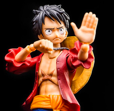
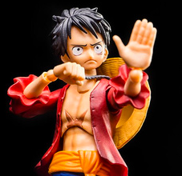
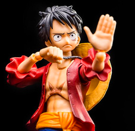

海贼兄弟
 

海贼兄弟队
我们是鲁东大学2013届毕业生，均为程序员但非前端。我主要希望通过这个学习平台系统学习前端，然后转型前端。
队员介绍
我是手游客户端开发，另两位兄弟分别从事android开发和分布式。这里主要说说我自己，因为成立这个队的原因主要是我。我想转型前端开发，目前已辞职在家自学。而他们两因为还在职只是业余学习，时间也没我多，所以这队目前实际成了我一个人的队，希望看到的朋友们记住我，让我们互相review互相讨论，一起学习。

我们是鲁东大学2013届毕业生，均为程序员但非前端。我主要希望通过这个学习平台系统学习前端，然后转型前端。
我是手游客户端开发，另两位兄弟分别从事android开发和分布式。这里主要说说我自己，因为成立这个队的原因主要是我。我想转型前端开发，目前已辞职在家自学。而他们两因为还在职只是业余学习，时间也没我多，所以这队目前实际成了我一个人的队，希望看到的朋友们记住我，让我们互相review互相讨论，一起学习。